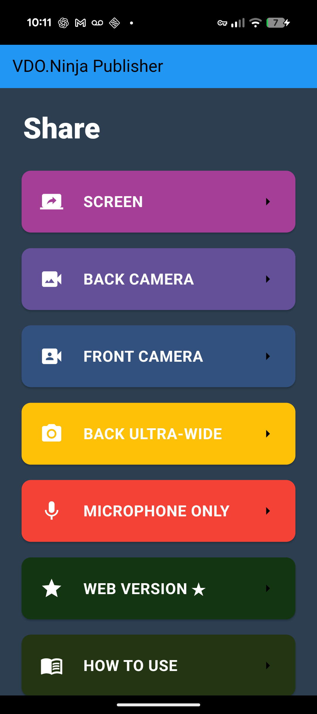
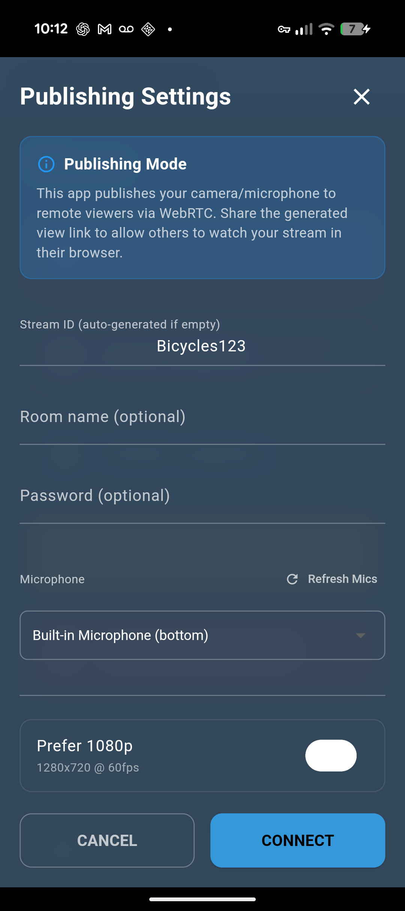
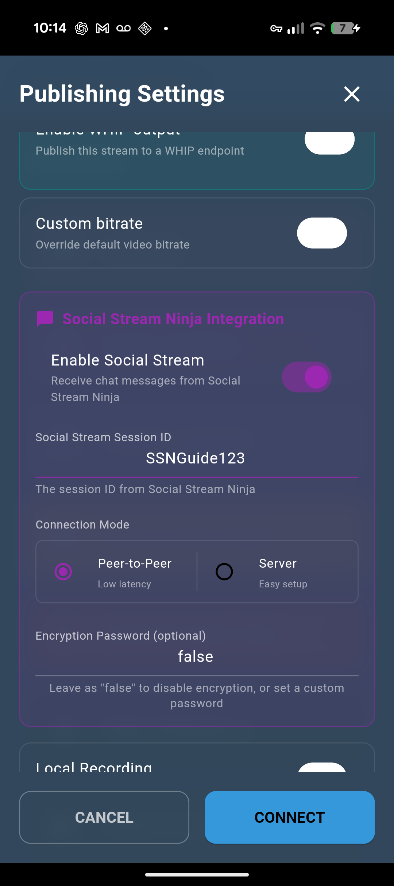
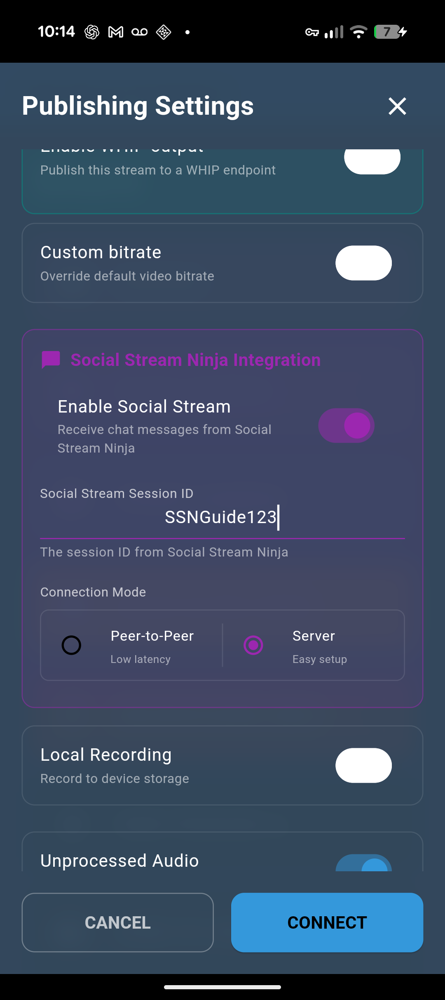

What This Setup Does
Social Stream Ninja runs on a computer, captures chat from Twitch, YouTube, Kick, or another source, then forwards those chat messages to the VDO.Ninja native app on your phone.
The phone is the receiver. It does not connect directly to Twitch or your chat platform.

1. Start A Social Stream Source
- Open Social Stream Ninja on the computer that will collect chat.
- Set your Social Stream Ninja session ID.
- Open the platform source you need, such as Twitch, YouTube, Kick, or TikTok.
- Confirm messages are appearing in the Social Stream source window or dock before checking the phone.
Twitch WebSocket source mode is fine. That source mode only controls how SSN captures Twitch chat; it is separate from the phone's Peer-to-Peer or Server mode.
2. Open Publishing Settings On The Phone
- Open the VDO.Ninja native app.
- Choose the camera, screen, or microphone mode you want to use.
- On the Publishing Settings screen, scroll down to Social Stream Ninja Integration.

3. Use The Same Session ID
Enable Social Stream and paste the exact same session ID that SSN is using on the computer.

false unless you set a matching SSN session password.4. Pick One Connection Mode
| Phone Mode | SSN Setting | Kasutage, kui |
|---|---|---|
| Peer-to-Peer | Use the normal SSN P2P output. Do not route chat only through the API server. | Best first choice. Works across normal internet connections without a local server. |
| Server | Enable Send chat messages to API server in SSN Global > Mechanics. | Use this when P2P is blocked or unreliable. |

Do not mix modes. If the phone is Peer-to-Peer but SSN is only sending via Server mode, the phone will not receive chat. If the phone is Server mode but SSN is not sending chat to the API server, the phone will not receive chat.
5. Connect And Test
- Tap Connect in the VDO.Ninja native app.
- Send a real chat message, or use an SSN test message.
- Watch the phone. If the phone says Social Stream not connected, the chat source may still be working, but the SSN-to-phone transport is not connected.
Common Failure Cases
| Symptom | Actual Cause | Fix |
|---|---|---|
| Chat appears in SSN, but the phone says Social Stream not connected. | The platform source is working, but the output path from SSN to the phone is not connected. | Check the session ID, connection mode, and SSN output setting. |
| It works on one PC but not another using the same session ID. | In Peer-to-Peer mode, SSN publishes using the session ID as the VDO.Ninja stream ID. Only one SSN instance can publish that same ID at a time. | Close or disable Social Stream on the first PC, then restart SSN on the second PC; or use a different session ID. |
| Server mode never receives chat. | The phone is listening on the SSN API-server channel, but SSN is not publishing chat there. | Enable Send chat messages to API server in SSN Global > Mechanics. |
| The source window shows chat, but nothing is forwarded. | The source may be in reply-only or no-capture mode. | Disable Ainult roboti vastused (ilma jäädvustamiseta) for that source. |
| A remote phone cannot use local server mode. | Local server mode is local to the computer or LAN and usually is not reachable through a firewall. | Use Peer-to-Peer, or use the public Server mode with SSN's API-server chat output enabled. |
BTTV, 7TV, And FFZ Emotes
Enable the BTTV, 7TV, or FFZ emote options in SSN before forwarding chat. SSN enriches the message before it reaches the phone.
The native app chat display may still show fallback text for image emotes if the app build is not rendering inline chat images.